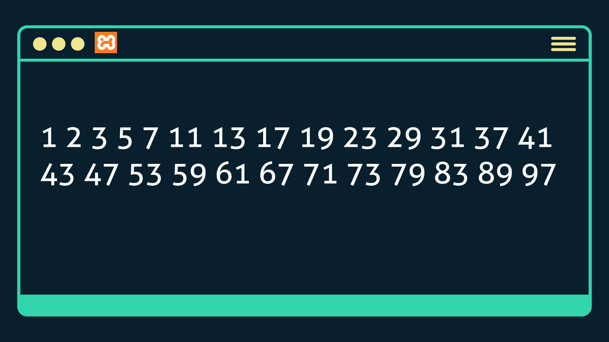

<pre>
No PHP, o comando break permite interromper a execução de uma estrutura de repetição antes de executar a condição de parada prevista no loop. A vantagem de usar esse comando está na redução do tempo de processamento, pois evita executar instruções quando determinado critério adicional for atendido.

Sabendo disso, você, web designer, precisa implementar um programa em PHP para exibir na tela do navegador web os números primos entre 1 e 100. Um número primo é todo número natural que é divisível apenas por 1 e por ele mesmo.

Para escrever esse programa, você precisa criar dois laços de repetição encadeados. O primeiro fará a contagem de 1 a 100, e o segundo fará a verificação para identificar se cada um desses números é primo.

Você deve utilizar o comando break para interromper o segundo laço de repetição quando já identificar que o número é primo. Além disso, você precisará usar o operador mod (%) para capturar o resto da divisão entre dois números, conforme o seguinte exemplo: echo 10 % 2 vai retornar 0 porque esse é o resto da divisão entre 10 e 2.

O resultado deve apresentar na tela a sequência de números que pode ser observada na imagem a seguir:
</pre>
